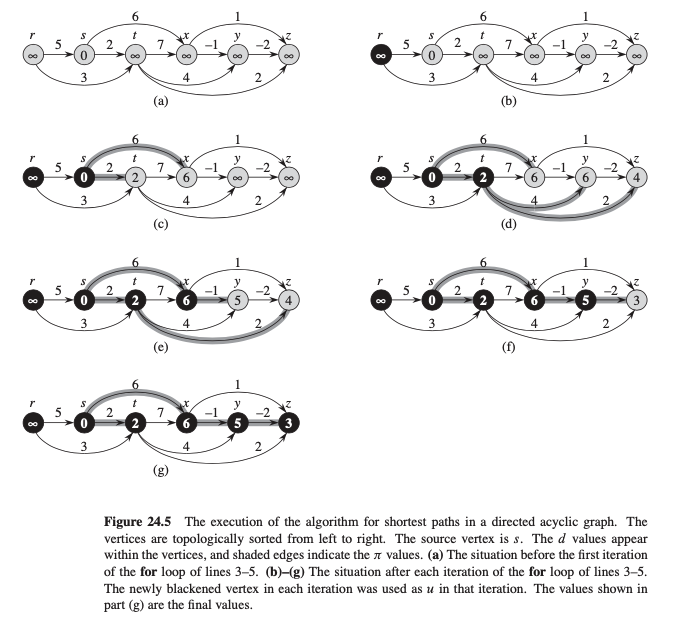

Lecture 11: Weighted Shortest Path
Contents
Lecture 11: Weighted Shortest Path¶
Overview¶
BFS in Lecture 9 can find the shortest path in graph
Gfrom given sources. But it only usable for unit-weighted graph, where the weights of all edges are 1. The distance of each vertexvin terms ofsis counted by the number of edges betweensandv.BFS is a
single source shortest-pathsproblem
Variants¶
in
shortest-paths problem, we are given aweighted, directedgraph \(G=(V,E)\) with weight functionwmapping edges to real-valued weights.the weight of a path
p=(v0, v1, v2,..., vk)asw(p)is the sum of weights of its constituent edges: \(w(p) = \sum_{i=1}^{k}w(v_{i-1}, v_i)\)define the
shortest-path weight\(\delta(u,v)\) from \(u\) to \(v\) by \(\delta(u,v) = min{w(p): u\rightarrow v} \ \text{if path exist else}\ \infty\)a
shortest pathfrom \(u\) to \(v\) is then defined as any pathpwith weight $w(p) = \delta(u,v).
single-destination shortest-paths problem: find a shortest path to a given destination vertex \(t\) from each vertex \(v\). We can reverse the directoin of each edges in the graph, and reduce this problem to asingle-sourceproblem.single-pair shortest-path problem: Find a shortest path from \(u\) to \(v\) for given vertices \(u\) and \(v\). If we solve the single-source problem with source vertex \(u\), we solve this problem also.all-pairs shortest-paths problem: Find a shortest path from \(u\) to \(v\) for every pair of vertices \(u\) and \(v\). Although we can solve this problem by running a single- source algorithm once from each vertex, we usually can solve it faster. (later in XXX)
Negative-weight edges¶
Negative-weight cycles:the weight of the cyclic path is negative
If the graph contains a negative-weight cycle reachable from \(s\), however, shortest-path weights are not well defined.
No path from \(s\) to a vertex on the cycle can be a shortest path—we can always find a path with lower weight by following the proposed “shortest” path and then traversing the negative-weight cycle.
If there is a negative-weight cycle on some path from \(s\) to \(v\), we define \(\delta(s,v)=\infty\).
Some shortest-paths algorithms, such as Dijkstra’s algorithm, assume that all edge weights in the input graph are nonnegative, as in the road-map example.
Others, such as the Bellman-Ford algorithm, allow negative-weight edges in the in- put graph and produce a correct answer as long as no negative-weight cycles are reachable from the source.
Typically, if there is such a negative-weight cycle, the algorithm can detect and report its existence.
Representing shortest paths¶
similar to BFS trees
shortest paths are not necessarily unique, and neither are shortest-trees.
Relaxation¶
for each vertex \(v \in V\), we maintain an attribute \(v.d\), which is an upper bound on the weight of a shortest path from source \(s\) to \(v\).
initialize the shortest-path estimates and predecessors in \(o(V)\) time
def initialize_single_source(G,s):
for v in G.V:
v.d = infinity
v.p = None
s.d = 0
The process of relaxing an edge \((u,v)\) consists of testing whether we can improve the shortest path to \(v\) found so far by going through \(u\) and, if so, updating \(v.d\) and \(v.p\).
def relax(u,v,w):
if v.d > u.d + w(u,v):
v.d = u.d + w(u,v)
v.p = u
Single-source shortest paths in DAG (directed acyclic graphs)¶
Find the shortest paths from source \(s\) to every vertex \(v\) in a weighted DAG
Algorithm: \(O(V+E)\) in aggregated analysis
def DAG_shortest_paths(G, s):
linked_list = topological_sort(G)
initialize_single_source(G,s)
for u in linked_list:
for v in G.Adj[u]:
relax(u,v,w)
Example

Follow up:
How to find the longest path in a DAG?
negate the edge weights and runing
DAG_shortest_paths(G,s)ormodifyDAG_shortest_paths(G,s)by replacing \(\infty\) by \(-\infty\) during initialization and \(>\) by \(<\) in therelaxprogram.